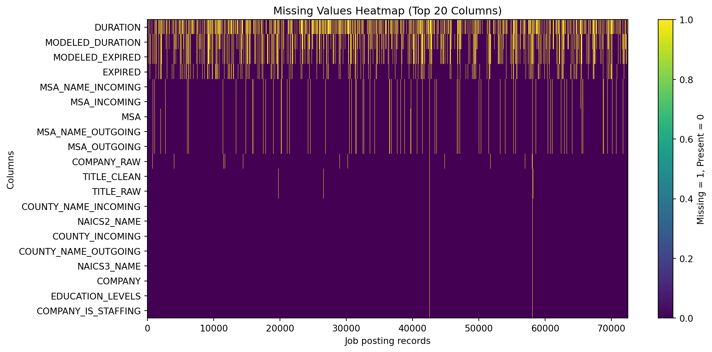
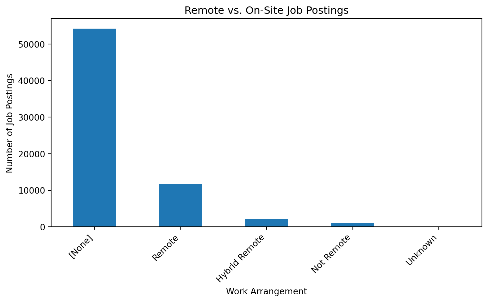
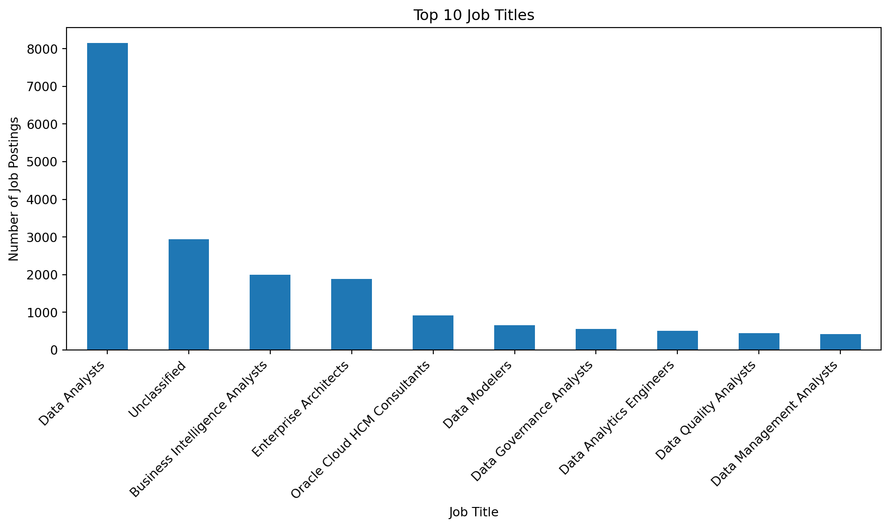
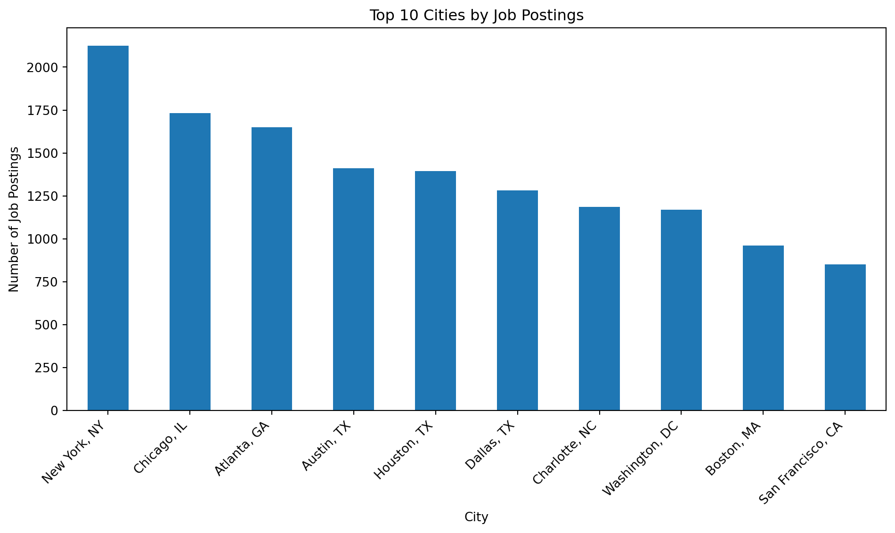

import pandas as pd
import numpy as npResearch Introduction: Business Analytics, Data Science, and Machine Learning Trends in 2024
Introduction
This page presents the data cleaning and exploratory data analysis for the project dataset.
Data Loading
The dataset used in this project is the Lightcast job postings dataset. It contains job posting metadata, employer information, job titles, skills, education requirements, employment type, remote status, salary fields, location fields, and multiple industry and occupation classification systems such as NAICS and SOC.
df = pd.read_csv("data/lightcast_job_postings.csv")
df.head()/var/folders/zm/kchmwqsx0xd5vvr99k4vy1b40000gn/T/ipykernel_27885/2732303742.py:1: DtypeWarning: Columns (0: COMPANY_IS_STAFFING, 1: IS_INTERNSHIP) have mixed types. Specify dtype option on import or set low_memory=False.
df = pd.read_csv("data/lightcast_job_postings.csv")| ID | LAST_UPDATED_DATE | LAST_UPDATED_TIMESTAMP | DUPLICATES | POSTED | EXPIRED | DURATION | SOURCE_TYPES | SOURCES | URL | ... | NAICS_2022_2 | NAICS_2022_2_NAME | NAICS_2022_3 | NAICS_2022_3_NAME | NAICS_2022_4 | NAICS_2022_4_NAME | NAICS_2022_5 | NAICS_2022_5_NAME | NAICS_2022_6 | NAICS_2022_6_NAME | |
|---|---|---|---|---|---|---|---|---|---|---|---|---|---|---|---|---|---|---|---|---|---|
| 0 | 1f57d95acf4dc67ed2819eb12f049f6a5c11782c | 9/6/2024 | 2024-09-06 20:32:57.352 Z | 0.0 | 6/2/2024 | 6/8/2024 | 6.0 | [\n "Company"\n] | [\n "brassring.com"\n] | [\n "https://sjobs.brassring.com/TGnewUI/Sear... | ... | 44.0 | Retail Trade | 441.0 | Motor Vehicle and Parts Dealers | 4413.0 | Automotive Parts, Accessories, and Tire Retailers | 44133.0 | Automotive Parts and Accessories Retailers | 441330.0 | Automotive Parts and Accessories Retailers |
| 1 | 0cb072af26757b6c4ea9464472a50a443af681ac | 8/2/2024 | 2024-08-02 17:08:58.838 Z | 0.0 | 6/2/2024 | 8/1/2024 | NaN | [\n "Job Board"\n] | [\n "maine.gov"\n] | [\n "https://joblink.maine.gov/jobs/1085740"\n] | ... | 56.0 | Administrative and Support and Waste Managemen... | 561.0 | Administrative and Support Services | 5613.0 | Employment Services | 56132.0 | Temporary Help Services | 561320.0 | Temporary Help Services |
| 2 | 85318b12b3331fa490d32ad014379df01855c557 | 9/6/2024 | 2024-09-06 20:32:57.352 Z | 1.0 | 6/2/2024 | 7/7/2024 | 35.0 | [\n "Job Board"\n] | [\n "dejobs.org"\n] | [\n "https://dejobs.org/dallas-tx/data-analys... | ... | 52.0 | Finance and Insurance | 524.0 | Insurance Carriers and Related Activities | 5242.0 | Agencies, Brokerages, and Other Insurance Rela... | 52429.0 | Other Insurance Related Activities | 524291.0 | Claims Adjusting |
| 3 | 1b5c3941e54a1889ef4f8ae55b401a550708a310 | 9/6/2024 | 2024-09-06 20:32:57.352 Z | 1.0 | 6/2/2024 | 7/20/2024 | 48.0 | [\n "Job Board"\n] | [\n "disabledperson.com",\n "dejobs.org"\n] | [\n "https://www.disabledperson.com/jobs/5948... | ... | 52.0 | Finance and Insurance | 522.0 | Credit Intermediation and Related Activities | 5221.0 | Depository Credit Intermediation | 52211.0 | Commercial Banking | 522110.0 | Commercial Banking |
| 4 | cb5ca25f02bdf25c13edfede7931508bfd9e858f | 6/19/2024 | 2024-06-19 07:00:00.000 Z | 0.0 | 6/2/2024 | 6/17/2024 | 15.0 | [\n "FreeJobBoard"\n] | [\n "craigslist.org"\n] | [\n "https://modesto.craigslist.org/sls/77475... | ... | 99.0 | Unclassified Industry | 999.0 | Unclassified Industry | 9999.0 | Unclassified Industry | 99999.0 | Unclassified Industry | 999999.0 | Unclassified Industry |
5 rows × 131 columns
df.shape(72498, 131)df.columns.tolist()['ID',
'LAST_UPDATED_DATE',
'LAST_UPDATED_TIMESTAMP',
'DUPLICATES',
'POSTED',
'EXPIRED',
'DURATION',
'SOURCE_TYPES',
'SOURCES',
'URL',
'ACTIVE_URLS',
'ACTIVE_SOURCES_INFO',
'TITLE_RAW',
'BODY',
'MODELED_EXPIRED',
'MODELED_DURATION',
'COMPANY',
'COMPANY_NAME',
'COMPANY_RAW',
'COMPANY_IS_STAFFING',
'EDUCATION_LEVELS',
'EDUCATION_LEVELS_NAME',
'MIN_EDULEVELS',
'MIN_EDULEVELS_NAME',
'MAX_EDULEVELS',
'MAX_EDULEVELS_NAME',
'EMPLOYMENT_TYPE',
'EMPLOYMENT_TYPE_NAME',
'MIN_YEARS_EXPERIENCE',
'MAX_YEARS_EXPERIENCE',
'IS_INTERNSHIP',
'SALARY',
'REMOTE_TYPE',
'REMOTE_TYPE_NAME',
'ORIGINAL_PAY_PERIOD',
'SALARY_TO',
'SALARY_FROM',
'LOCATION',
'CITY',
'CITY_NAME',
'COUNTY',
'COUNTY_NAME',
'MSA',
'MSA_NAME',
'STATE',
'STATE_NAME',
'COUNTY_OUTGOING',
'COUNTY_NAME_OUTGOING',
'COUNTY_INCOMING',
'COUNTY_NAME_INCOMING',
'MSA_OUTGOING',
'MSA_NAME_OUTGOING',
'MSA_INCOMING',
'MSA_NAME_INCOMING',
'NAICS2',
'NAICS2_NAME',
'NAICS3',
'NAICS3_NAME',
'NAICS4',
'NAICS4_NAME',
'NAICS5',
'NAICS5_NAME',
'NAICS6',
'NAICS6_NAME',
'TITLE',
'TITLE_NAME',
'TITLE_CLEAN',
'SKILLS',
'SKILLS_NAME',
'SPECIALIZED_SKILLS',
'SPECIALIZED_SKILLS_NAME',
'CERTIFICATIONS',
'CERTIFICATIONS_NAME',
'COMMON_SKILLS',
'COMMON_SKILLS_NAME',
'SOFTWARE_SKILLS',
'SOFTWARE_SKILLS_NAME',
'ONET',
'ONET_NAME',
'ONET_2019',
'ONET_2019_NAME',
'CIP6',
'CIP6_NAME',
'CIP4',
'CIP4_NAME',
'CIP2',
'CIP2_NAME',
'SOC_2021_2',
'SOC_2021_2_NAME',
'SOC_2021_3',
'SOC_2021_3_NAME',
'SOC_2021_4',
'SOC_2021_4_NAME',
'SOC_2021_5',
'SOC_2021_5_NAME',
'LOT_CAREER_AREA',
'LOT_CAREER_AREA_NAME',
'LOT_OCCUPATION',
'LOT_OCCUPATION_NAME',
'LOT_SPECIALIZED_OCCUPATION',
'LOT_SPECIALIZED_OCCUPATION_NAME',
'LOT_OCCUPATION_GROUP',
'LOT_OCCUPATION_GROUP_NAME',
'LOT_V6_SPECIALIZED_OCCUPATION',
'LOT_V6_SPECIALIZED_OCCUPATION_NAME',
'LOT_V6_OCCUPATION',
'LOT_V6_OCCUPATION_NAME',
'LOT_V6_OCCUPATION_GROUP',
'LOT_V6_OCCUPATION_GROUP_NAME',
'LOT_V6_CAREER_AREA',
'LOT_V6_CAREER_AREA_NAME',
'SOC_2',
'SOC_2_NAME',
'SOC_3',
'SOC_3_NAME',
'SOC_4',
'SOC_4_NAME',
'SOC_5',
'SOC_5_NAME',
'LIGHTCAST_SECTORS',
'LIGHTCAST_SECTORS_NAME',
'NAICS_2022_2',
'NAICS_2022_2_NAME',
'NAICS_2022_3',
'NAICS_2022_3_NAME',
'NAICS_2022_4',
'NAICS_2022_4_NAME',
'NAICS_2022_5',
'NAICS_2022_5_NAME',
'NAICS_2022_6',
'NAICS_2022_6_NAME']Data Cleaning
Dropping Unnecessary Columns
Several columns are not needed for the main analysis because they are identifiers, tracking fields, raw URLs, or older versions of industry and occupation classification codes. Removing these columns makes the dataset easier to work with and avoids redundancy.
In particular, multiple versions of NAICS and SOC codes appear in the dataset. To simplify the analysis, only the most recent detailed versions are kept where relevant, such as NAICS_2022_6 and SOC_2021_4. Older or overlapping versions are removed to reduce duplication and keep the classification system consistent.
columns_to_drop = [
"ID", "URL", "ACTIVE_URLS", "DUPLICATES", "LAST_UPDATED_TIMESTAMP",
"NAICS2", "NAICS3", "NAICS4", "NAICS5", "NAICS6",
"SOC_2", "SOC_3", "SOC_5"
]
existing_drop_cols = [col for col in columns_to_drop if col in df.columns]
df = df.drop(columns=existing_drop_cols)
df.shape(72498, 118)Handling Missing Values
Missing values are handled differently depending on the type of variable. Numerical fields are filled with the median when appropriate because the median is less sensitive to extreme values. Categorical fields are labeled as “Unknown” when the missing category may still be analytically useful. Columns with a very high share of missing values can be dropped because they contribute little reliable information.
missing_summary = df.isna().sum().sort_values(ascending=False)
missing_summary.head(20)
missing_percent = (df.isna().mean() * 100).sort_values(ascending=False)
missing_percent.head(20)
high_missing_cols = missing_percent[missing_percent > 50].index.tolist()
df = df.drop(columns=high_missing_cols)
categorical_fill_cols = [
"COMPANY_NAME", "EMPLOYMENT_TYPE_NAME", "REMOTE_TYPE_NAME",
"CITY_NAME", "COUNTY_NAME", "MSA_NAME", "NAICS_2022_6_NAME",
"SOC_2021_4_NAME", "LOT_CAREER_AREA_NAME", "LIGHTCAST_SECTORS_NAME"
]
for col in categorical_fill_cols:
if col in df.columns:
df[col] = df[col].fillna("Unknown")
len(high_missing_cols), high_missing_cols[:20]
numeric_fill_cols = [
"MIN_YEARS_EXPERIENCE", "MAX_YEARS_EXPERIENCE",
"MIN_EDULEVELS", "MAX_EDULEVELS",
"SALARY_FROM", "SALARY_TO", "SALARY"
]
for col in numeric_fill_cols:
if col in df.columns:
df[col] = pd.to_numeric(df[col], errors="coerce")
df[col] = df[col].fillna(df[col].median())Missing Values Heatmap
The heatmap below shows where missing values are concentrated across the columns with the highest amount of missing data. This makes it easier to see whether missingness is isolated or spread across many variables.
import matplotlib.pyplot as plt
missing_matrix = df.isna().astype(int)
cols_to_show = missing_matrix.sum().sort_values(ascending=False).head(20).index
plt.figure(figsize=(12, 6))
plt.imshow(missing_matrix[cols_to_show].T, aspect="auto", interpolation="nearest")
plt.yticks(range(len(cols_to_show)), cols_to_show)
plt.xlabel("Job posting records")
plt.ylabel("Columns")
plt.title("Missing Values Heatmap (Top 20 Columns)")
plt.colorbar(label="Missing = 1, Present = 0")
plt.show()
Removing Duplicates
Duplicate job postings can overstate demand if the same job appears more than once. To reduce this issue, duplicate rows are removed based on key identifying fields such as job title, company, location, and posting date.
duplicate_subset = [col for col in ["TITLE_NAME", "COMPANY_NAME", "LOCATION", "POSTED"] if col in df.columns]
before_rows = len(df)
df = df.drop_duplicates(subset=duplicate_subset, keep="first")
after_rows = len(df)
before_rows, after_rows, before_rows - after_rows(72498, 69198, 3300)Checking Data Types
Some columns, especially salary and experience variables, should be numeric for analysis.
numeric_check_cols = ["SALARY", "SALARY_FROM", "SALARY_TO", "MIN_YEARS_EXPERIENCE", "MAX_YEARS_EXPERIENCE"]
existing_numeric_check_cols = [col for col in numeric_check_cols if col in df.columns]
for col in existing_numeric_check_cols:
df[col] = pd.to_numeric(df[col], errors="coerce")
df[existing_numeric_check_cols].dtypesMIN_YEARS_EXPERIENCE float64
dtype: objectExploratory Data Analysis
This section explores key trends in business analytics, data science, and machine learning job postings, including industry, remote work, salary fields, job titles, and employers.
Salary Distribution
This histogram shows the distribution of salaries across job postings.
import seaborn as sns
if "NAICS_2022_6_NAME" in df.columns and "SALARY" in df.columns:
top_industries = df["NAICS_2022_6_NAME"].value_counts().head(10).index
subset = df[df["NAICS_2022_6_NAME"].isin(top_industries)]
plt.figure(figsize=(12,6))
sns.boxplot(data=subset, x="NAICS_2022_6_NAME", y="SALARY")
plt.xticks(rotation=45)
plt.title("Salary by Industry")
plt.show()Salary by Industry
This boxplot compares salary distributions across the top industries with the highest number of job postings.
import seaborn as sns
if "NAICS_2022_6_NAME" in df.columns and "SALARY" in df.columns:
top_industries = df["NAICS_2022_6_NAME"].value_counts().head(10).index
subset = df[df["NAICS_2022_6_NAME"].isin(top_industries)]
plt.figure(figsize=(12,6))
sns.boxplot(data=subset, x="NAICS_2022_6_NAME", y="SALARY")
plt.xticks(rotation=45)
plt.title("Salary by Industry")
plt.show()Job Postings by Industry
Understanding industry demand helps job seekers prioritize skill development.
import matplotlib.pyplot as plt
if "NAICS_2022_6_NAME" in df.columns:
industry_counts = df["NAICS_2022_6_NAME"].value_counts().head(10)
plt.figure(figsize=(10, 6))
industry_counts.plot(kind="bar")
plt.title("Top 10 Industries by Job Postings")
plt.xlabel("Industry")
plt.ylabel("Number of Job Postings")
plt.xticks(rotation=45, ha="right")
plt.tight_layout()
plt.show()
This chart shows which industries appear most often in the dataset. It helps identify where demand for analytics-related roles is concentrated.
Salary Summary
salary_cols = [col for col in ["SALARY", "SALARY_FROM", "SALARY_TO"] if col in df.columns]
if len(salary_cols) > 0:
df[salary_cols].describe()
else:
print("No salary columns are available after cleaning.")No salary columns are available after cleaning.Remote vs. On-Site Jobs
This chart shows how job postings are distributed across remote work categories.
if "REMOTE_TYPE_NAME" in df.columns:
remote_counts = df["REMOTE_TYPE_NAME"].value_counts(dropna=False)
plt.figure(figsize=(8, 5))
remote_counts.plot(kind="bar")
plt.title("Remote vs. On-Site Job Postings")
plt.xlabel("Work Arrangement")
plt.ylabel("Number of Job Postings")
plt.xticks(rotation=45, ha="right")
plt.tight_layout()
plt.show()
Top Job Titles
This chart highlights the most common job titles in the dataset.
title_col = "TITLE_NAME" if "TITLE_NAME" in df.columns else "TITLE_RAW"
title_counts = df[title_col].value_counts().head(10)
plt.figure(figsize=(10, 6))
title_counts.plot(kind="bar")
plt.title("Top 10 Job Titles")
plt.xlabel("Job Title")
plt.ylabel("Number of Job Postings")
plt.xticks(rotation=45, ha="right")
plt.tight_layout()
plt.show()
Top Cities
This chart shows the cities with the highest number of job postings in the dataset.
if "CITY_NAME" in df.columns:
city_counts = df["CITY_NAME"].value_counts().head(10)
plt.figure(figsize=(10, 6))
city_counts.plot(kind="bar")
plt.title("Top 10 Cities by Job Postings")
plt.xlabel("City")
plt.ylabel("Number of Job Postings")
plt.xticks(rotation=45, ha="right")
plt.tight_layout()
plt.show()
Key Findings
The exploratory analysis gives a first look at job postings connected to business analytics, data science, and machine learning. The results suggest that these roles are needed across different industries, employers, and locations, which shows that demand for analytics related talent is not limited to one type of company or sector.
The most common job titles help show which roles appear most often in the market, while the employer and city summaries give a better sense of where opportunities may be concentrated. The remote work breakdown is also useful because it gives students a clearer idea of how flexible these roles may be in today’s job market.
The salary related fields offer a starting point for understanding compensation, although not every posting includes complete salary information. Overall, this analysis suggests that students interested in business analytics, data science, and machine learning should pay attention to role titles, hiring patterns, location trends, and remote work options when thinking about their career paths.
References
This analysis is based on the Lightcast job postings dataset provided in Module 2: Lab 01. Additional academic sources will be added that support the findings conlusion: